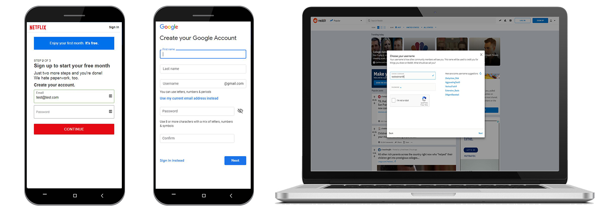
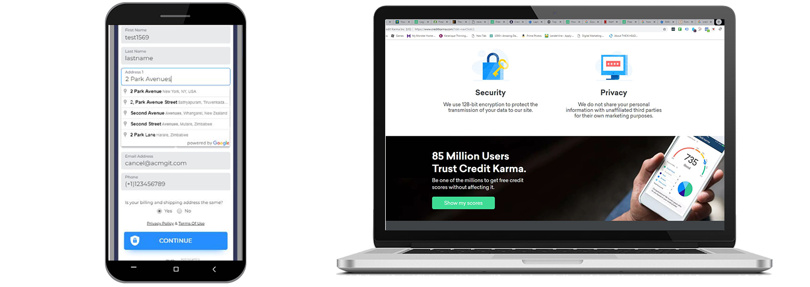

Review By Matthew Chavez
What is Credit Karma and How do They Make Money?
Credit Karma is a company that allows you to view your credit scores and credit accounts absolutely free. Their revenue is generated by receiving commission from referring users to sign up for credit cards or loans.
UI/UX Critique and Suggestions
Form Experience Critique
1. Form fields' look and feel are dated.
2. There is too much space in between each field and also the CTA.
3. The steps above the form should be evenly spaced out to the end of the progress bar. It will help decrease the busy look in that section on mobile.
UI/UX Suggestions
1. There is a form field trend going on with some of the top visited sites. Netflix.com, Reddit.com and Google.com all follow a similar form field experience where form field labels are inside the input fields by default and become smaller inside the field when it is focused/clicked on and filled. In experience, following web trends has tested well for the most part.
UI/UX Suggestions Continued
1. Adding an address auto completion functionality would help quicken the form filling process for the user trying to sign up. I have used the Google API for this in the past and have tested into it and has shown great results, especially for mobile users.
2. Adding a FOMO(Fear of Missing Out) feature would add a boost of motivation to click through and sign up. For example, in a press release, Credit Karma stated, that they have over 85 million users. This is great content to put on the home page.
Some Data or Content That Could Generate More Revenue.
Suggested Content/Data to turn Free Users to Valued Users.
1. As an extra confidence booster to have users sign up for recommended products, there should be a section on the dashboard when a user signs in, that shows how they compare to others in their age group, location, occupation etc.
2. Debt to income ratio is another important tool that will let a user know if they have room in their financial life for more credit.
3. Under the recommendations tab when a user is signed in, there should be a couple more initial questions asked to narrow down a search for the best fitting offer. For example, it could be an overlay popup or a filter functionality. I suggest this because I found myself scrolling through so many credit card offers that I didn't know the other offers like business loans were below them.

Upgrades/Upsells
Offer a Premium Paid Membership that Will Include the following:
1. Access to 24/7 Credit Specialist - Users can contact a specialist to ask personal questions on identity theft or any inaccuracies in credit scores and reports.
2. Updated weekly reports and scores from all three bureaus instead of two.
3. Identity Theft Insurance (Because Credit Sesame offer this for free).
4. Lost Wallet Assistance - Users will be provided replacement cards of all their open credit card accounts.
5. Fraud Alert Management - Credit Karma will alert credit card companies and others who may extend you credit that you may have been a victim of fraud, including identity theft.
TWO SUGGESTIONS THAT WILL MOST EFFECTIVELY INCREASE ROI
I believe that by optimizing sign up form functionality and creating a filter functionality for credit and loan offers will create the most effective increase in ROI.
My reason for the form is because it is one of user's first impressions of you. This is where you can amaze them and really make their life easy by auto-filling the address fields and improving the mobile experience on the fields themselves, since most traffic is mobile now. This, in my opinion is one of the biggest barriers to entry.
My reason for optimizing the recommended credit and loan offers is that there is potential to create the most personalized offers based on occupation, frequency of travel and etc. From my experience in affiliate marketing, commissions from refferring people to apply for a loan is much more than the $11-$20 you can charge for a premium membership (Price based on competition). This would also make the greatest impact while using the least amount of resources.
User Story - Sign Up
As a user filling out the sign up form, I want to know that this will not be time consuming.
Acceptance Criteria:
- Address field populates city, state and zip code fields when google api dropdown is used. Example is here: https://jsfiddle.net/api/post/library/pure/
- Vertical Spacing Between Fields is Condensed.
- Functionality of Form Filling should follow the example at https://codepen.io/chrisoncode/pen/IdGKH?editors=010
- The steps verbiage is evenly spaced across and to the end of the progress bar.
Definition of Done:
- Passes All Regression Tests
- Passes testing per acceptance criteria items
- Approved by Design Team
User Story - My Recommended Offers Tab
As a user navigating to "My Recommendations", I want to only see offers that I am truly interested in or truly need. All the options i currently receive are overwhelming.
Acceptance Criteria:
- User is prompted by a popup overlay to receive the "Ultimate Recommendation"
- User is asked their interest, occupation, if they rent or own a home and dine out frequency.
- User Choices are narrowed down accurately based on answers to questions
Definition of Done:
- Passes All Regression Tests
- Passes testing per acceptance criteria items
- Approved by Design Team
Resources Needed For User Sign Up Form Optimizations and Offer Recommendation Engine
- Project Manager - Needed to manage workflow and gather any material that is needed to produce and execute.
- Designers - Needed to create final mock-ups of new functionalities and approve staged versions of implemented optimizations.
- Developers - Needed to implement new form functionalities and optimizations
- QA - Needed to make sure regression testing is fulfilled and to prevent any errors or setbacks of newly implemented code.
Truly Grateful for the Opportunity! Thank You!
- Matthew Chavez